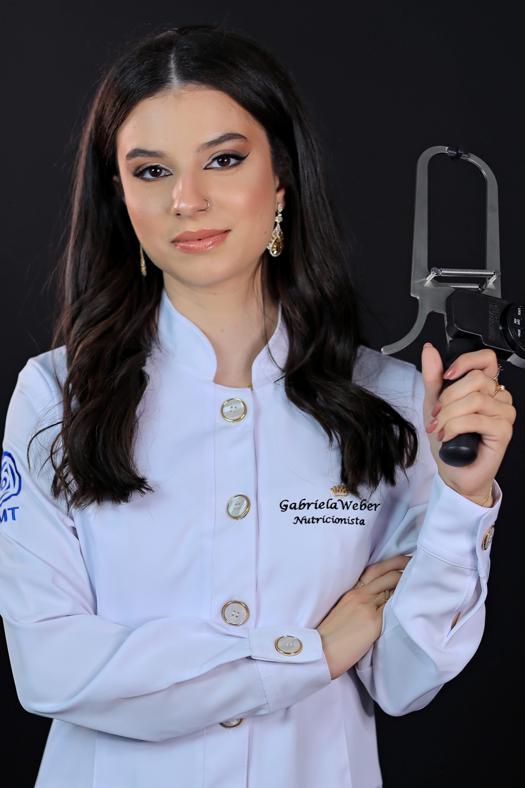
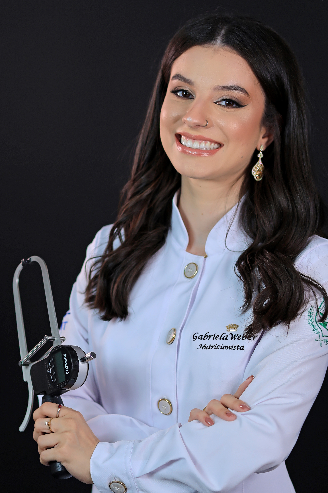

Encontre o equilíbrio entre saúde, estética e prazer em comer. Sem dietas restritivas, com ciência e exclusividade para você.
Começar minha transformação

Nutricionista apaixonada por ajudar pessoas a reconquistarem sua saúde e autoestima através de uma alimentação consciente e prazerosa.
Sendo Graduada pela UFMT e Pós Graduanda em Nutrição Clínica através da UFRJ, meu trabalho é entregar mais do que um plano alimentar, desenho uma estratégia única que se encaixe na sua rotina e respeite a sua individualidade e objetivo.
Acredito que o caminho para o corpo e mente saudáveis deve ser leve, sustentável e baseado em evidências científicas.
Conheça meu atendimentoUma abordagem integral para resultados consistentes.
Seu plano alimentar é único, baseado em exames, rotina, gostos e histórico de saúde.
Trabalhamos sua relação com a comida, focando no *mindful eating* e autonomia.
Resultados estéticos são consequência de um corpo nutrido e metabolicamente saudável.
O que dizem os pacientes que mudaram de vida.
"Estou muito satisfeito com a dieta. Mias fácil cumprir do que pensei."
- Fa.
"Finalmente consegui controlar minha ansiedade por doces com o método dela. O atendimento é incrível e super atencioso."
- Carlos M.
"Melhorei minha performance nos treinos e minha pele está ótima. A nutrição funcional faz toda a diferença!"
- Juliana R.
Agende sua consulta avaliativa e dê o primeiro passo para conquistar a saúde e o corpo que você deseja.
Agendar via WhatsApp